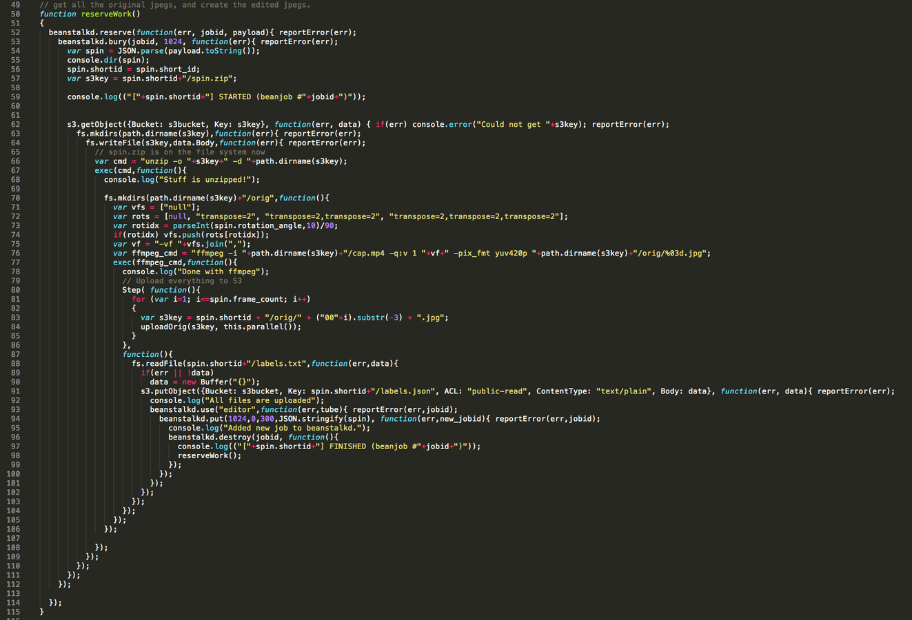

name: title class: dark-bg, title-slide <i class="ion-social-nodejs color-node size-icon-xxxl center"></i> # Intro to node.js .icon-text.size-icon-sm[npatmaja] <i class="icon ion-social-github color-light size-icon"></i><br> .icon-text.size-icon-sm[@novalpas] <i class="icon ion-social-twitter color-light size-icon"></i><br> .icon-text.size-icon-sm[nauvalatmaja.com] <i class="icon ion-social-rss color-light size-icon"></i> --- class: dark-bg # Plan * Node.js? * Coding in node.js * Server side? * Some tests --- class: dark-bg # Node.js * JavaScript + Google chrome V8 engine * Single-threaded, asynchronous, non-blocking ??? * JavaScript, IMO one of underrated language. What I like about javascript is its pragmatism and its hybrid nature, somewhere between an OO and functional * function as first class citizen * closure * curry * V8 engine is what makes node so fast and eficient due to its revolutionary design, speed and efficient memory management --- class: dark-bg # Node.js * JavaScript + Google chrome V8 engine * Single-threaded, asynchronous, non-blocking .center[ ] ??? * non-blocking: returns immediately without waiting for the data to be read or written. node use libuv as the non-blocking engine Reactor pattern: 1. The application generates a new I/O operation by submitting a request to the Event Demultiplexer. The application also specifies a handler, which will be invoked when the operation completes. Submitting a new request to the Event Demultiplexer is a non-blocking call and it immediately returns the control back to the application. 2. When a set of I/O operations completes, the Event Demultiplexer pushes the new events into the Event Queue. 3. At this point, the Event Loop iterates over the items of the Event Queue. 4. For each event, the associated handler is invoked. 5. The handler, which is part of the application code, will give back the control to the Event Loop when its execution completes (5a). However, new asynchronous operations might be requested during the execution of the handler (5b), causing new operations to be inserted in the Event Demultiplexer (1), before the control is given back to the Event Loop. 6. When all the items in the Event Queue are processed, the loop will block again on the Event Demultiplexer which will then trigger another cycle. --- class: dark-bg # Node.js .center[  ] Package manager for .color-npm[javascript] ``` $ npm install module_name ``` ??? * De Facto package manager for javascript * jQuery, backbone.js, bootstraps, angular, etc. --- class: dark-bg # Node.js .left.float-left.width-40[ <img src="img/medium-logo.png" width="80"> <img src="img/netflix-logo.png" width="200"> <img src="img/linkedin-logo.png" width="100"> ] .right.float-right.width-40[ etc ... ] .clear[ .footnote[.red[*] http://www.quora.com/What-companies-are-using-Node-js-in-production] ] --- class: dark-bg # Code in Node.js * Simply, it's javascript! ```javascript console.log('Hello World'); ``` -- * With some patterns * callback * module system (CommonJS modules) --- class: dark-bg # Code in Node.js ```javascript var fs = require('fs'); fs.readFile('hello-world.js', { encoding: 'utf-8' }, function(err, data){ if (err) throw err; console.log(data); }); ``` * Use `require` to load a module * Callback is a function ??? * CPS to propagate the result, taken from functional programming --- class: dark-bg # Code in Node.js ```javascript function readFile(filePath, callback) { fs.readFile(filePath, { encoding: 'utf-8' }, function(err, data){ data = ['Opening ' + filePath, data].join('\n\n'); return callback(err, data); }); } readFile('hello-world.js', function(err, data){ if (err) return console.error(err); return console.log(data); }); ``` * Follow CPS (continuation-passing-style) * Conventions: callback last; error first --- class: dark-bg ## When CPS goes wrong .center[  ] .clear[ .footnote[.red[*] http://slides.com/michaelholroyd/asyncnodejs#/2/2] ] --- class: dark-bg .center[ <img src="img/meme-jc.jpg" width="70%"> # .red[Callback Hell] ] --- class: dark-bg .center.v-center[ # How to avoid it? ] --- class: dark-bg ```js module.exports = function(dir, cb) { fs.readdir(dir, function(er, files) { // [1] if (er) return cb(er); var counter = files.length; var stats = []; files.forEach(function(file, index) { fs.stat(path.join(dir, file), function(er, stat) { // [2] if (errored) return; if (er) return cb(er); stats[index] = stat; // [3] if (--counter == 0) { // [4] var largest = stats .filter(function(stat) { return stat.isFile(); }) // [5] .reduce(function(prev, current) { // [6] if (prev.size > current.size) return prev; return current; }); cb(null, files[stats.indexOf(largest)]); // [7] } }); }); }); }; ``` .clear[ .footnote[.red[*] https://strongloop.com/strongblog/node-js-callback-hell-promises-generators/] ] --- class: dark-bg ## Modularization ```js function getStats(paths, cb) { var counter = paths.length; var stats = []; paths.forEach(function(path, index) { fs.stat(path, populateStat(stats, counter, cb)); }); } function populateStat(stats, counter, cb) { return function(err, stat) { if (err) return cb(err); stats.push(stat); if (stats.length === counter) cb(null, stats); }; } function getLargestFile(files, stats) { var largest = stats.filter(filterFile).reduce(getBiggerFile); return files[stats.indexOf(largest)]; } ``` --- class: dark-bg ## Modularization ```js module.exports = function(dir, cb) { fs.readdir(dir, function(er, files) { // [1] if (er) return cb(er); var paths = files.map(function(file) { return path.join(dir, file); }); getStats(paths, function(er, stats) { if (er) return cb(er); var largestFile = getLargestFile(files, stats); cb(null, largestFile); }); }); }; ``` --- class: dark-bg ## Async ```js var async = require('async'); module.exports = function(dir, cb) { async.waterfall([ function(next) { fs.readdir(dir, next); // [1] }, function(files, next) { var paths = files.map(function(file) { return path.join(dir, file); }); async.map(paths, fs.stat, function(er, stats) { // [2] next(er, files, stats); }); }, function(files, stats, next) { var largest = stats.filter(filterFile).reduce(getBiggerFile); next(null, files[stats.indexOf(largest)]); }], cb); // [3] }; ``` --- class: dark-bg ## Async ```js module.exports = function(dir, cb) { async.waterfall([ getFiles(dir), getStats(dir), getLargestFile() ], cb); }; ``` --- class: dark-bg ## Promise ```js var Q = require('q'); var fsStat = Q.denodeify(fs.stat); var fsReaddir = Q.denodeify(fs.readdir); // [1] module.exports = function(dir) { return fsReaddir(dir) .then(function(files) { var promises = files.map(function(file) { return fsStat(path.join(dir, file)); }); return Q.all(promises).then(function(stats) { // [2] return [files, stats]; // [3] }); }) .then(function(data) { // [4] var files = data[0]; var stats = data[1]; var largest = stats.filter(filterFile).reduce(filterFile); return files[stats.indexOf(largest)]; }); } ``` ??? A promise is an object that represents the return value or the thrown exception that the function may eventually provide. A promise can also be used as a proxy for a remote object to overcome latency. --- class: dark-bg ## Promise ```js module.exports = function(dir) { return fsReaddir(dir) .then(getStats(dir)) .then(getLargestFile()); } ``` --- class: dark-bg # Server App .center.v-center-s[ # express ] --- class: dark-bg ## Simple RESTful API ```js var port = process.env.PORT || 7878; var parser = require('body-parser'); var express = require('express'); var _ = require('lodash'); var router = express.Router(); var app = express(); var tigers = [{ id: 1, name: 'Tigris' }, { id: 2, name: 'Phantom' }]; // only parse json req.body, use urlencoded to parse html form app.use(parser.json()); router.get('/', function(req, res) { return res.json({ message: 'hello world' }); }); ... // some other routes // prefix all the routes with /api app.use('/api', router); app.listen(port); module.exports = app; console.log('Server started at port ' + port); ``` --- class: dark-bg ## Simple RESTful API ```js router.route('/tigers') // => /api/tigers .get(function(req, res) { return res.json(tigers); }) .post(function(req, res) { ... // code to contstruct the new object tigers.push(tiger); return res.json(tigers); }); router.route('/tigers/:id') // => /api/tigers/1 .get(function(req, res) { var id = parseInt(req.params.id); var tiger = _.find(tigers, { id: id }); return res.json(tiger); }) .put(function(req, res) { ... // change the the name of the specified tiger tiger.name = req.body.name; return res.json(tiger); }) .delete(function(req, res) { ... // delete the object in the array if (!result) return res.status(404).json({ message: 'message' }); return res.json({ message: 'a success message' }); }); ``` --- class: dark-bg # Adding some tests > Systems that aren’t testable aren’t verifiable. Arguably, a system that > cannot be verified should never be deployed. > .right[`-` Robert C. Martin] .clear[ .footnote[.red[*] Clean Code: A Handbook of Agile Software Craftsmanship] ] --- class: dark-bg # Adding some tests .center[ <img src="img/mocha-logo.png" width="300"> ] --- class: dark-bg ## Test the simple RESTful server ```js var expect = require('chai').expect; var request = require('supertest'); var app = require('./simple-rest'); describe('simple RESTful', function() { ... describe('GET /api/tigers/:id', function() { it('returns list of two tigers', function(done) { request(app) .get(['/api/tigers', 1].join('/')) .expect('content-type', /json/) .expect(200) .end(function(err, data) { expect(err).to.be.not.ok; expect(data.body.name).to.be.eq('Tigris'); done(); }); }); }); ... }); ``` --- class: dark-bg ## Test the simple RESTful server ```js describe('simple RESTful', function() { ... describe('POST /api/tigers', function() { it('returns list of two tigers', function(done) { request(app) .post('/api/tigers') .send({ name: 'Panthera' }) .expect('content-type', /json/) .expect(200) .end(function(err, data) { expect(err).to.be.not.ok; expect(data.body).to.have.length(3); expect(data.body).to.have.deep.property('[2].name', 'Panthera'); expect(data.body).to.have.deep.property('[2].id', 3); done(); }); }); }); ... }); ``` --- class: dark-bg ## Test the simple RESTful server ```js describe('simple RESTful', function() { ... describe('DELETE /api/tigers/:id', function() { describe('when wrong id given', function(done) { it('returns 404', function(done) { request(app) .delete(['/api/tigers', 10].join('/')) .expect('content-type', /json/) .expect(404) .end(function(err, data) { expect(err).to.be.not.ok; expect(data.body.message).to .be.eq('Something wrong when deleting a tiger with id 10'); done(); }); }); }); ... }); ``` --- class: dark-bg ## Test the simple RESTful server ```bash $ mocha test-simple-rest.js --reporter=nyan ``` .center.v-center-s[ ] --- class: dark-bg # However - Things are moving quickly - Keep your options open - Design for changes --- class: dark-bg > Software is not limited by physics, like > buildings are. It is limited by imagination, > by design, by organization. > .right[`-` Ralph Johnson] .clear[ .footnote[.red[*] http://martinfowler.com/ieeeSoftware/whoNeedsArchitect.pdf] ] ??? Ralph Johnson, a professor at University of Illinois at Urbana-Champaign in his correspondece with Martin Fowler (reported in Fowler's report) wrote the words. Software is not limited by physics, like buildings are. It is limited by imagination, by design, by organization. In short, it is limited by properties of people, not by properties of the world. “We have met the enemy, and he is us.” --- class: dark-bg .center.v-center[ # Thank You ] --- class: dark-bg # Resource <i class="icon ion-ios-monitor color-light size-icon"></i> .icon-text.size-icon-sm[http://nauvalatmaja.com/intro-to-nodejs-2015-08/] <i class="icon ion-social-nodejs color-light size-icon"></i> .icon-text.size-icon-sm[https://github.com/npatmaja/nodejs-examples]